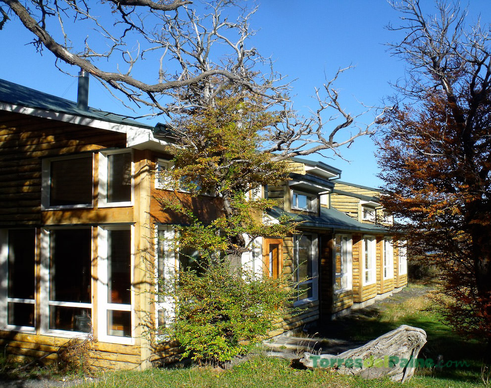
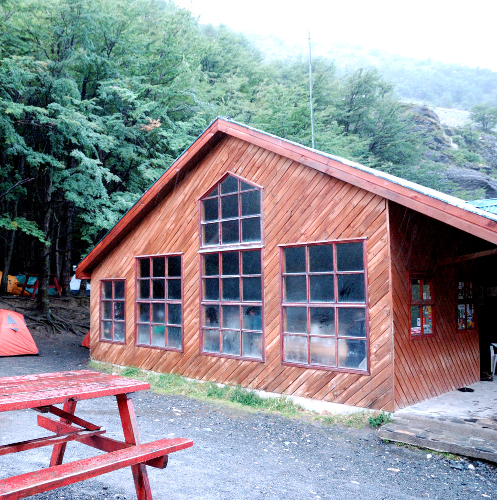
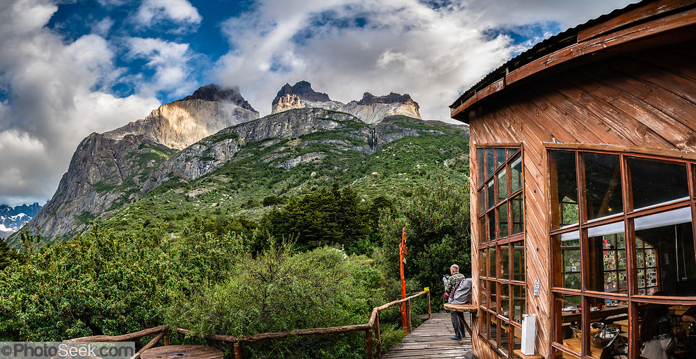
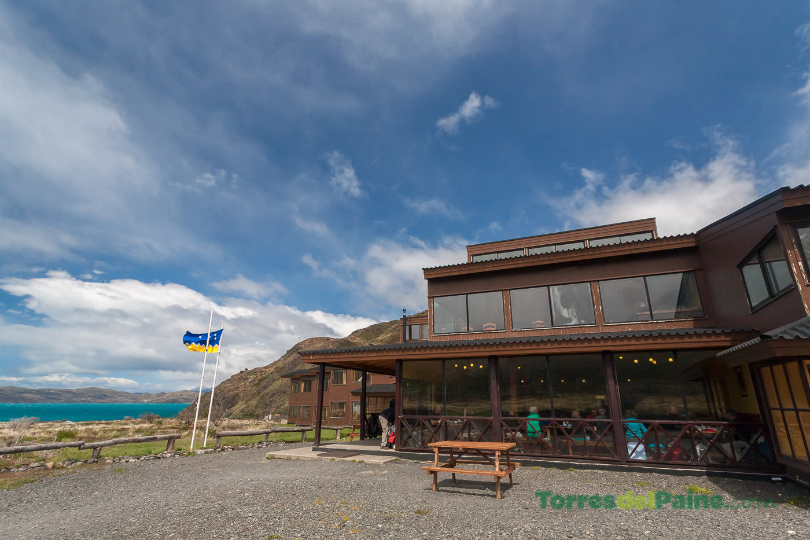
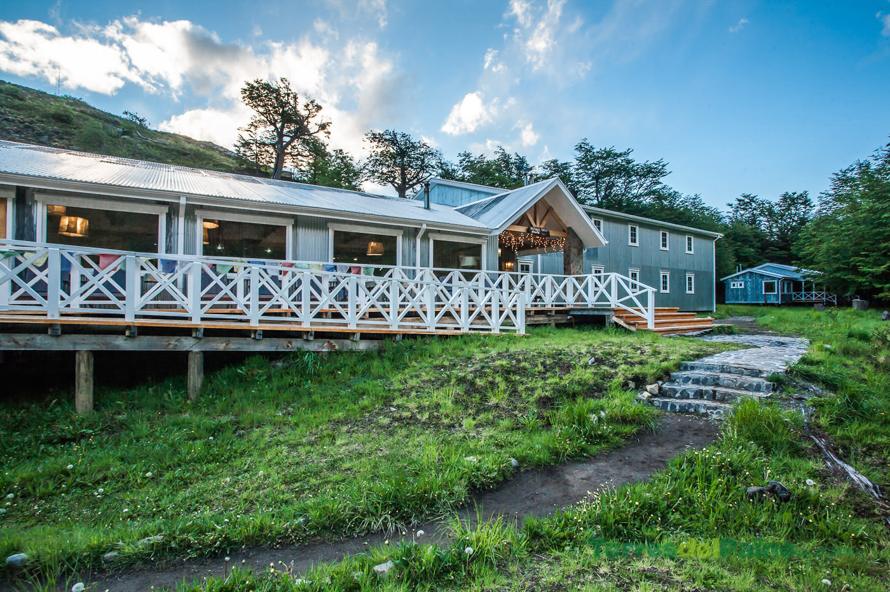

|  | Día 1 - Refugio Torre Central
El primer día llegas a este refugio para dejar la mayor parte de tu equipaje y poder subir al mirador Base Torres sólo con la mochila de ataque y estando de vuelta, pasar la noche. |
|  | Día 1 - Refugio Chileno
Este refugio está a medio camino de la subida al mirador Base Torres. Aquí puedes descansar y recuperar fuerzas para seguir el camino. |
|  | Día 2 - Refugio Los Cuernos
A este refugio llegarás el segundo día luego de una caminata de 11 kms. desde el refugio Torre Central y podrás apreciar la majestuosidad de Los Cuernos. |
|  | Día 3 - Refugio Paine Grande
El tercer día parte subiendo al mirador Francés y mirador Británico para llegar al refugio más grande de todos y que está en un plano en la ribera del lago Pehoé. |
|  | Día 4 - Refugio Grey
El cuarto día te lleva a este refugio que está muy cerca del glaciar Grey. Aquí puedes navegar hasta el glaciar y escalarlo para luego volver a descansar y al día siguiente partir de vuelta al lago Pehoé a esperar la barcaza que te llevará a la salida del parque en Puerto Pudeto. |